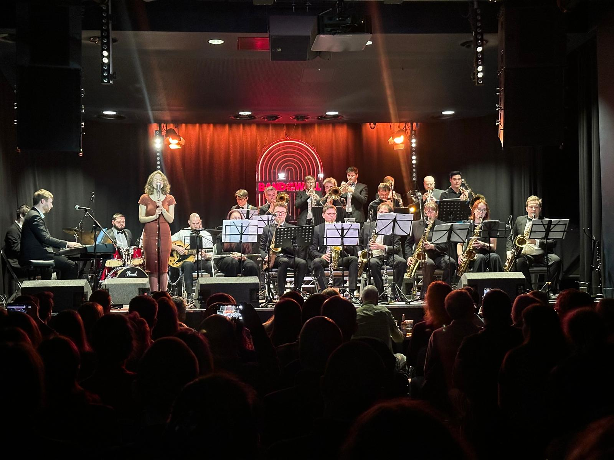
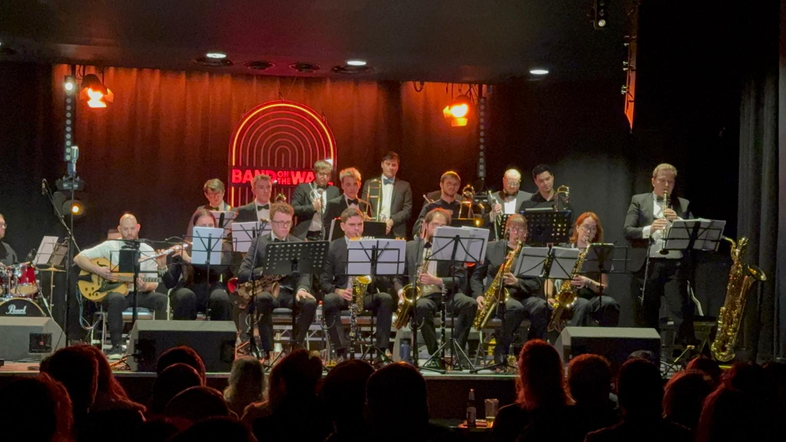
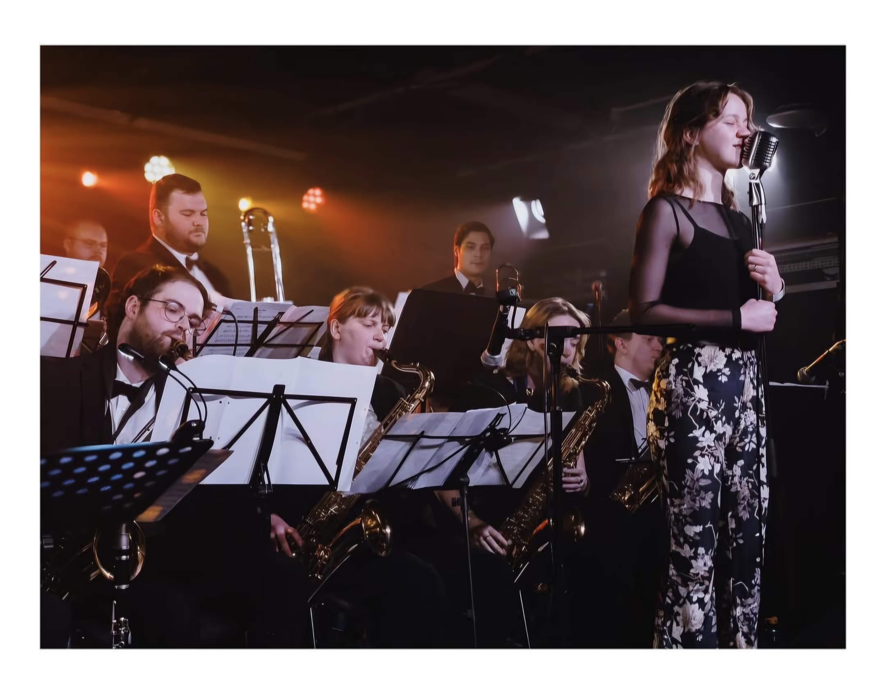
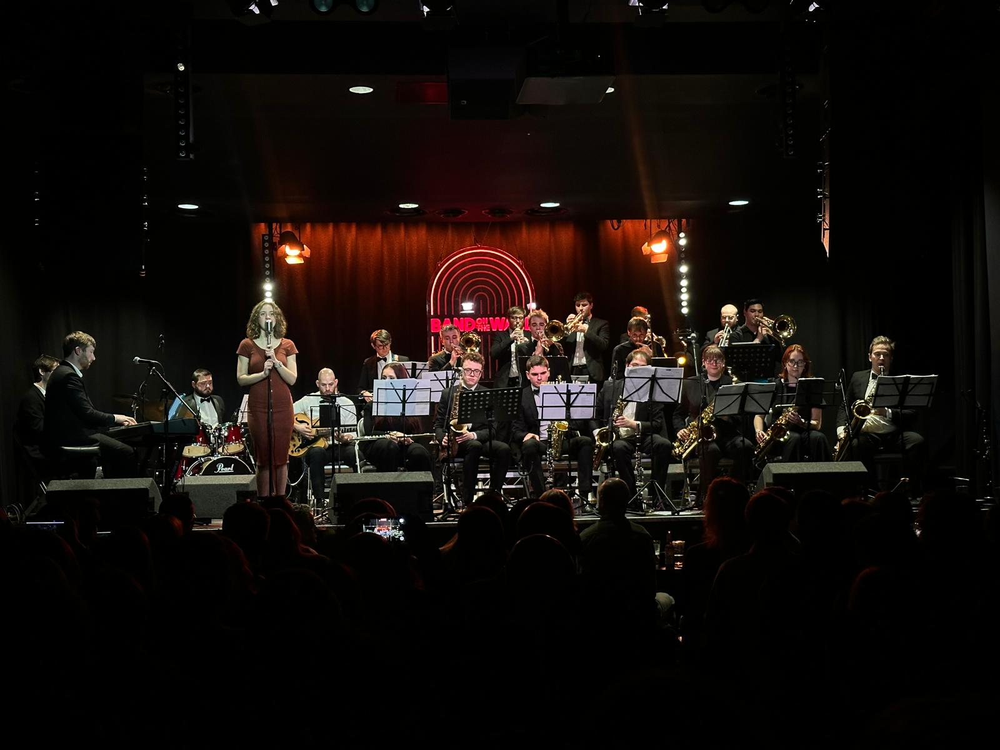
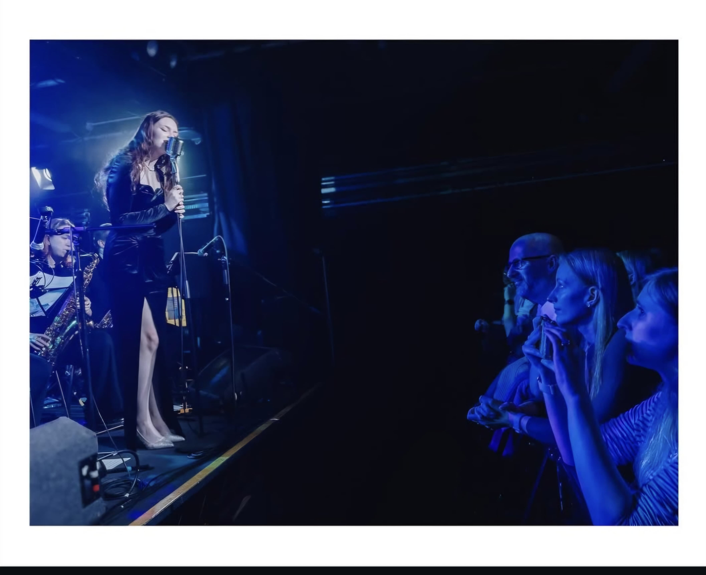
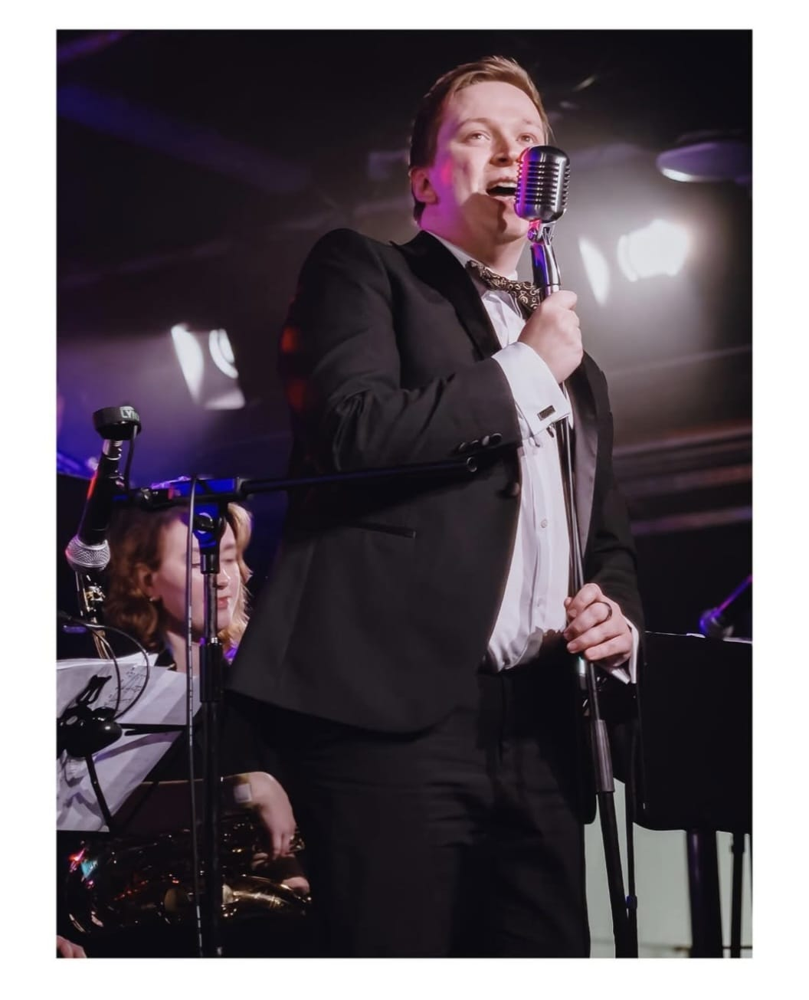
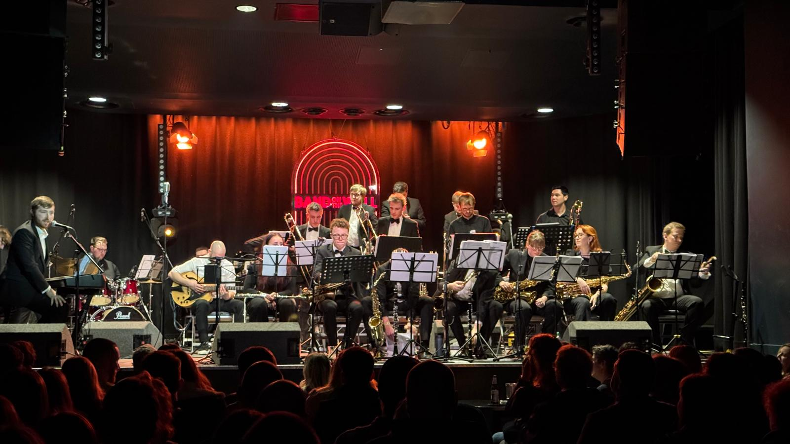
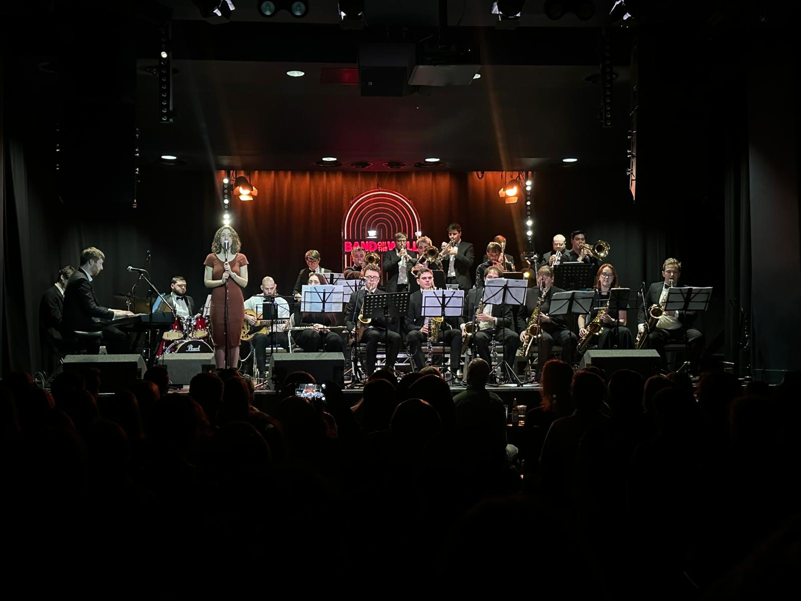

Past performance
Band on the Wall
Manchester
Tanner and the Tones have performed live at Band on the Wall.

Tanner and the Tones, live at Band on the Wall
A big band from Manchester, led by Joseph Tanner. We play swing and jazz standards, plus arrangements from the big-band repertoire and the occasional film or game tune.
A selection of moments from the band on stage.













Our gig calendar will appear here. Until then, check our Linktree for the latest dates.
Past performance
Manchester
Tanner and the Tones have performed live at Band on the Wall.
Seen us play?
We'd love to hear what you thought of a recent performance.
Send us a reviewFor bookings and enquiries, email tannerandthetones@gmail.com.